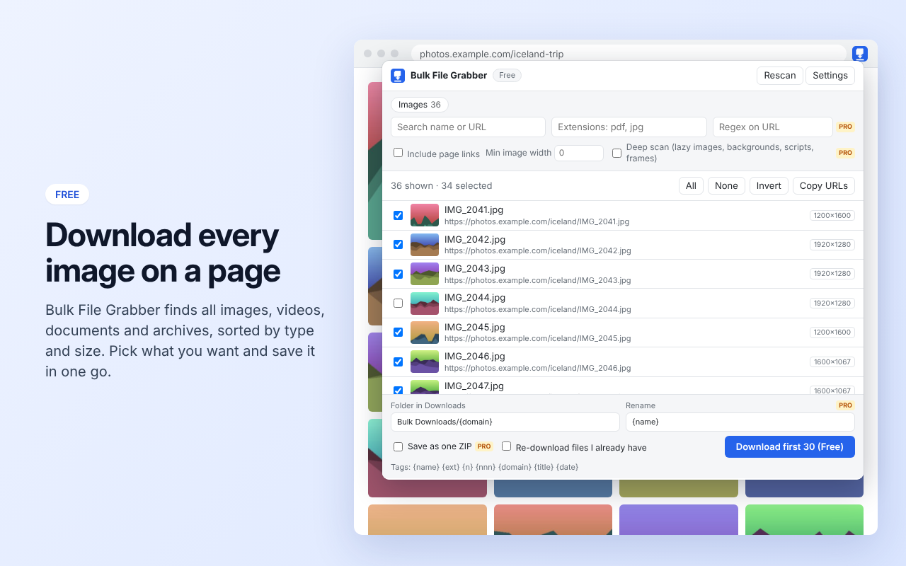
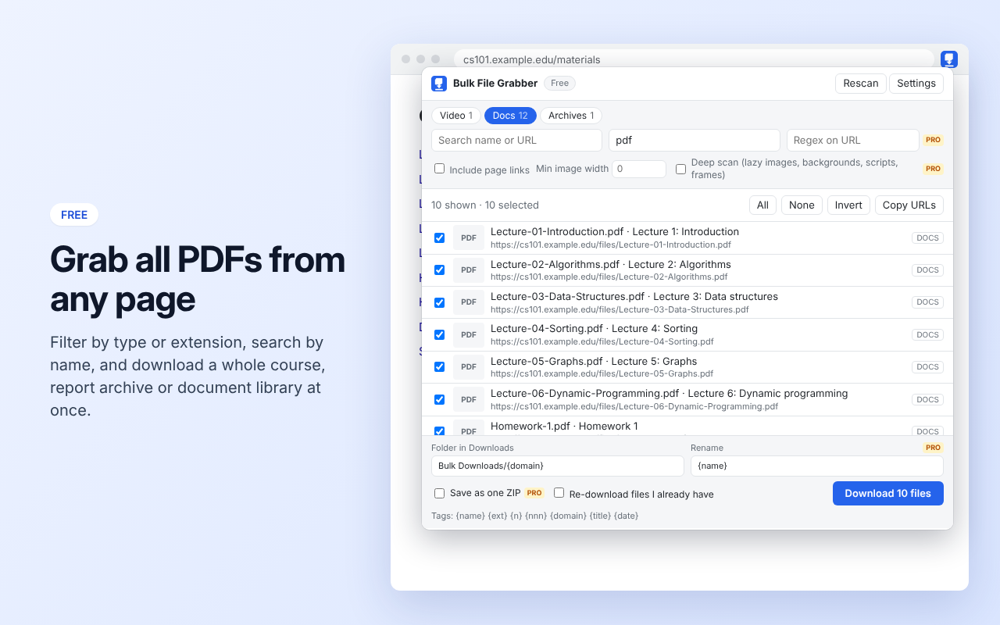

Download every file on a page in one click
Bulk File Grabber is a Chrome extension that finds all images, PDFs and other documents, video, audio and archives on the page you are viewing. Filter by type, extension or name, tick what you want, and download it all into a folder of your choice.

Free
- Real bulk downloads: up to 30 files per batch, 3 at a time, with progress and automatic retry.
- Finds links, images (including srcset), video, audio and embedded files.
- Filter by type, extension, name or minimum image width.
- Saves into a subfolder of Downloads, such as
Bulk Downloads/{domain}, and skips files you already have. - Copy all selected URLs to the clipboard.
Pro — one-time payment, no subscription
- No limit per batch and up to 8 parallel downloads.
- Save the whole selection as one ZIP.
- Rename with templates:
{date}_{nnn}, page title, link text. - Regex filters on URLs.
- Deep scan: lazy-loaded images, CSS backgrounds, links hidden in scripts, all frames.

Privacy
No account, no analytics, no server. The extension reads a page only when you click its icon. Details in the privacy policy.
Help
Questions and bug reports: github.com/Galusz/galusz.github.io/issues.